Membangun Kompetensi di Era Transformasi Digital
Radar Kediri Institute adalah lembaga pelatihan dan pengembangan SDM di bawah naungan Jawa Pos Radar Kediri — media massa terpercaya yang telah terverifikasi oleh Dewan Pers. Kami merancang program yang terintegrasi antara pendidikan, jurnalistik, teknologi digital, dan karakter building untuk menjawab kebutuhan nyata dunia kerja dan dunia pendidikan.
Dengan jaringan kemitraan luas bersama institusi pemerintahan, lembaga hukum, dan dunia industri, setiap program kami tidak hanya memberikan ilmu — tetapi juga membuka peluang, membangun reputasi, dan memperkuat citra institusi Anda di mata publik.
Kurikulum berbasis praktik langsung dari praktisi media dan industri.
Jejaring luas di bawah naungan Jawa Pos Radar Kediri.
Fasilitas ruang belajar yang representatif dan mendukung kreativitas.

26 Tahun
Jawa Pos Radar Kediri20+
Pengajar & Fasilitator Berpengalaman
230+
Kegiatan Sukses Terlaksana
25+
Tahun Berpengalaman
Layanan Kami
Solusi lengkap pengembangan institusi Anda — dari pelatihan, publikasi, hingga event profesional.
Pelatihan Jurnalistik
PopulerWorkshop dan pelatihan kejurnalistikan untuk siswa, mahasiswa, dan staf. Meliputi reportase, penulisan berita, fotografi, videografi, hingga pengelolaan website media.
Lihat DetailDigital Marketing Training
Pelatihan strategi pemasaran digital mendalam: desain grafis, fotografi produk, content creator, dan branding digital — untuk siswa, guru, maupun karyawan perusahaan.
Lihat DetailPublic Speaking & Motivasi
Program kelas inspirasi dan Achievement Motivation Training (AMT) menghadirkan tokoh sukses, motivator berpengalaman, dan pemimpin untuk membangun karakter serta produktivitas.
Lihat DetailManajemen Event
Layanan Event Organizer profesional untuk Dies Natalis/Milad, LDKS Camp, Outbound, Pemilu OSIS, hingga acara institusi pemerintah dan perusahaan.
Lihat DetailCoding & AI untuk Pelajar
Pelatihan inovasi digital kreatif — dasar pemrograman dan konsep Artificial Intelligence (AI) untuk siswa SD/MI hingga SMP/MTs agar siap menghadapi era teknologi.
Lihat DetailPress Release & Publikasi
Layanan publikasi kegiatan institusi Anda di media cetak dan media sosial Jawa Pos Radar Kediri — terverifikasi Dewan Pers untuk branding yang akuntabel dan efektif.
Lihat DetailGaleri Kegiatan
Lebih dari sekadar pelatihan — setiap kegiatan kami adalah pengalaman nyata yang mendorong pertumbuhan dan membuka peluang baru bagi peserta.
- Semua
- Pelatihan
- Motivasi
- Jurnalistik
- Digital Marketing
- Event & EO
- Outbound
- Publikasi

Digital Marketing Training Plus
Siswa SMK Kediri belajar strategi pemasaran digital, desain konten, dan fotografi produk langsung dari praktisi berpengalaman. Kegiatan dipublikasikan di Jawa Pos Radar Kediri.
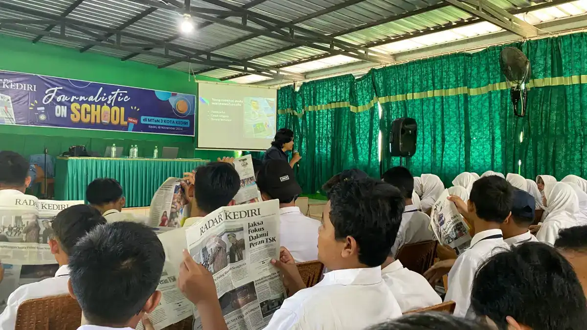
{kind=link}
Student Journalist Trip
Peserta merasakan langsung pengalaman menjadi wartawan: reportase di lapangan, wawancara pejabat, dan tulisan dievaluasi oleh redaktur Radar Kediri.
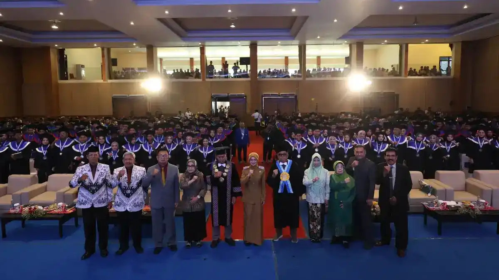
{kind=link}
Event Wisuda Sekolah & Kampus
Layanan Event Organizer wisuda profesional — mulai dari dekorasi megah, dokumentasi, hiburan, hingga publikasi momen kelulusan di media cetak dan digital Jawa Pos Radar Kediri.
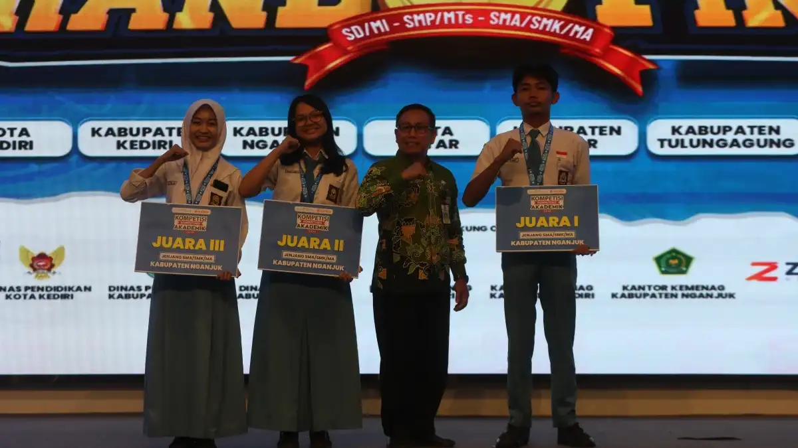
{kind=link}
Kompetisi Kompetensi Akademik (KKA)
Ajang bergengsi untuk mengukur dan mengapresiasi kompetensi akademik siswa antar sekolah — diselenggarakan secara profesional dan dipublikasikan di Jawa Pos Radar Kediri.
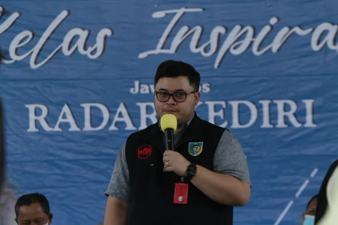
{kind=link}
Kelas Inspirasi & Character Building
Menghadirkan kepala daerah, pengusaha sukses, dan tokoh inspiratif untuk memotivasi siswa mempersiapkan masa depan dengan penuh keyakinan.
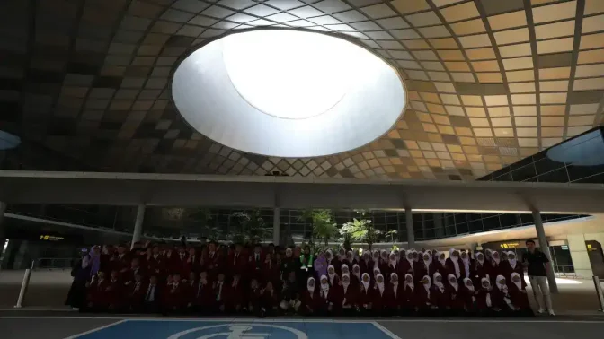
{kind=link}
Journalist Kids Experience
Program pengenalan jurnalistik untuk siswa PAUD hingga SD/MI — dikemas menyenangkan dengan fun game edukatif, simulasi liputan berita, dan kunjungan redaksi.
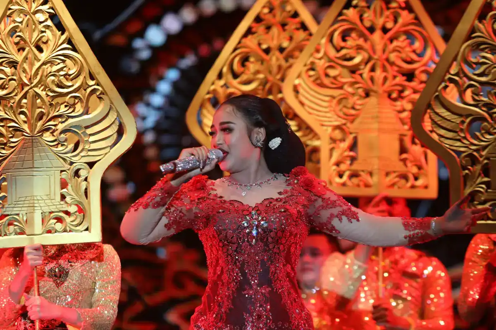
{kind=link}
Gebyar Dies Natalis / Milad Sekolah
Radar Kediri Institute menghadirkan layanan Event Organizer profesional untuk perayaan HUT/Dies Natalis sekolah dan madrasah — mulai dari konsep, dekorasi, hiburan, hingga publikasi penuh di Jawa Pos Radar Kediri.
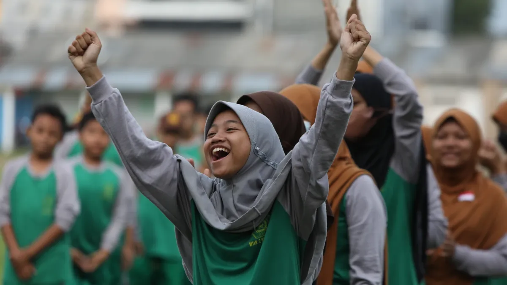
{kind=link}
Outbound Team Building
Aktivitas luar ruangan seru dan menantang untuk membangun kerja sama, kepemimpinan, dan semangat tim — cocok untuk sekolah, kampus maupun perusahaan.
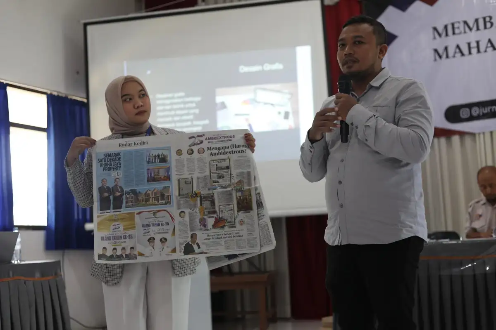
{kind=link}
Politics & Government Studies
Siswa mengunjungi langsung lembaga pemerintahan dan DPRD — berdialog dengan pimpinan, mempraktikkan peran birokrat, dan memahami sistem demokrasi secara nyata.
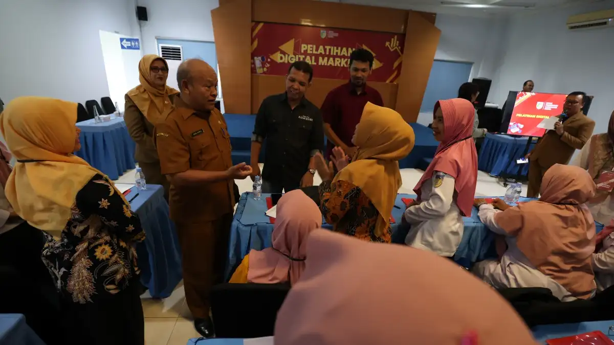
{kind=link}
Pelatihan Website, Coding & AI
Pelatihan pembuatan website, pemrograman dasar dan pengenalan Artificial Intelligence (AI) untuk siswa SMP hingga SMA — membekali generasi muda dengan keterampilan digital sejak dini.
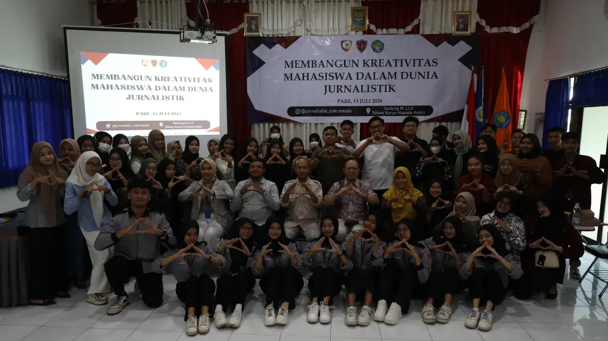
{kind=link}
School Media to Manage
Program pengelolaan media sekolah dan kampus secara profesional: penulisan, editing, fotografi, hingga penataan layout halaman — menghasilkan media sekolah atau kampus yang berkualitas media massa.

Pemilu OSIS (Election of Student Organization)
Program demokrasi pelajar melalui simulasi pemilihan Ketua OSIS yang dikemas serius dan dipublikasikan di media massa Jawa Pos Radar Kediri — mencetak generasi demokratis sejak sekolah.
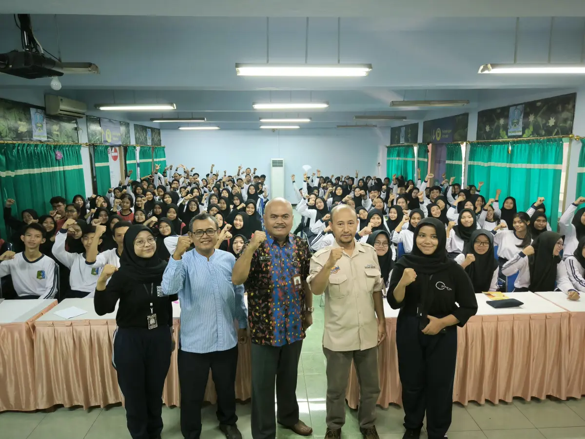
{kind=link}
LDKS Camp — Leadership Training
Program kepemimpinan siswa dengan nilai plus: peserta juga dilatih menulis dan fotografi berstandar jurnalistik, dikombinasikan aktivitas outdoor yang membangun karakter dan keberanian.
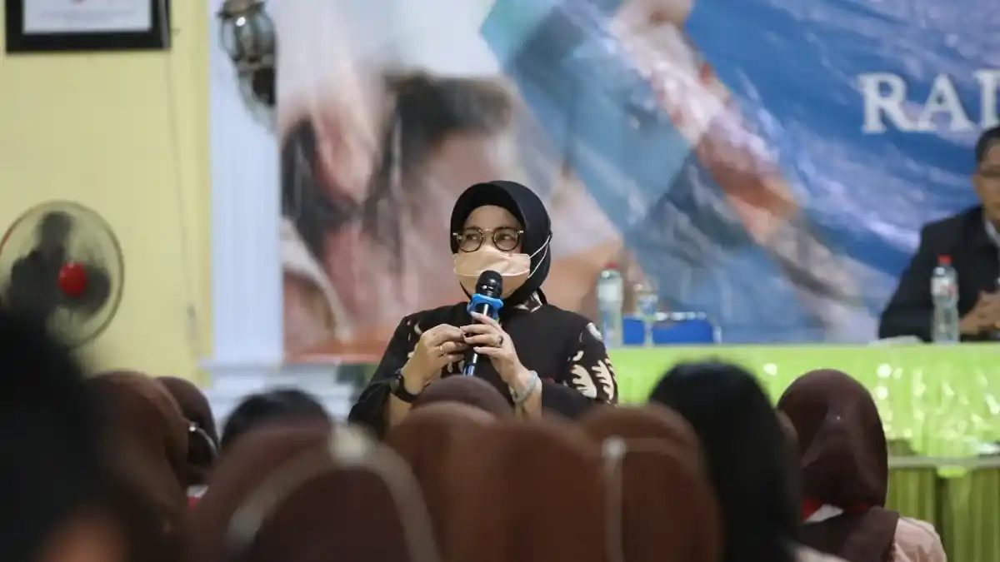
{kind=link}
Parenting Program
Program penguatan karakter, akhlak mulia, dan budi pekerti bersama motivator berpengalaman — menyatukan sekolah, orang tua, dan siswa dalam satu ekosistem pendidikan yang positif.
Mengapa Memilih Kami?
Radar Kediri Institute hadir sebagai mitra strategis dalam pengembangan kompetensi media dan profesional Anda.
Alasan Utama Bermitra Bersama Kami
Kami bukan sekadar lembaga pelatihan biasa.
Terverifikasi Dewan Pers
Semua publikasi kegiatan dilakukan melalui Jawa Pos Radar Kediri yang berbadan hukum dan terverifikasi resmi oleh Dewan Pers — menjamin akuntabilitas anggaran branding Anda.
Narasumber Ahli & Jaringan Luas
Narasumber kami adalah praktisi nyata: jurnalis senior, pejabat pemerintahan, pengusaha sukses, dan pakar teknologi digital.
Program Terintegrasi & Fleksibel
Setiap program dirancang khusus sesuai kebutuhan institusi — bisa satu hari, multi-sesi, atau program tahunan berkesinambungan.
Publikasi Otomatis di Media Massa
Setiap kegiatan yang bermitra dengan kami mendapat liputan dan publikasi di media cetak serta media sosial Jawa Pos Radar Kediri.
Penguasaan Kreatif
Mendorong setiap individu untuk menghasilkan karya kreatif melalui bimbingan intensif dan praktis.
Dampak Terukur
Program kami didesain untuk memberikan peningkatan keahlian yang nyata bagi perkembangan karier dan bisnis.
Tenaga Ahli Profesional
Didukung oleh instruktur berkompeten dengan jam terbang tinggi di bidang jurnalistik, digital, dan manajemen.
Testimoni Alumni
Apa kata mereka yang telah mengikuti program pelatihan di Radar Kediri Institute.

Budi Santoso
Staf Humas Pemda
Pelatihan jurnalistik dasar di sini sangat membantu saya dalam menyusun rilis berita yang lebih menarik dan profesional bagi media massa.

Siska Amelia
Pengusaha UMKM
Workshop digital marketing membuka wawasan baru bagi saya. Kini branding produk UMKM saya jauh lebih dikenal luas di Kediri.

Dewi Lestari
Guru SMK
Materi yang disampaikan sangat praktis. Sangat relevan untuk diajarkan kembali kepada siswa agar siap menghadapi dunia industri kreatif.

Ahmad Fauzi
Content Creator
Mentornya benar-benar praktisi ahli. Teknik videografi yang saya dapatkan sangat meningkatkan kualitas konten sosial media saya.

Eko Prasetyo
Wirausaha
Public speaking bukan lagi hal yang menakutkan bagi saya. Kini saya lebih percaya diri saat mempresentasikan bisnis di depan investor.
Tim Kami
Belajar langsung dari para praktisi yang kompeten dan berpengalaman di bidangnya masing-masing.

Shinta Nurma Ababil
Editor Jawa Pos Radar Kediri
Heri Muda Setiawan
Manager Pemasaran JPRK
Ayu Isma
Wartawan JPRK
Endro Purwito
Wartawan Senior Jawa PosDewan Eksekutif

Kurniawan Muhammad
Memimpin arah strategis organisasi dengan pengalaman lebih dari dua dekade di industri media.
Chafid Suyuti
Berfokus pada pengembangan modul pelatihan kreatif dan transformasi digital bagi institusi.

Mahfud
Mengelola ekosistem operasional dan kemitraan strategis dengan berbagai instansi nasional.

M. Arif Hanafi
Mengembangkan jangkauan program RK Institute untuk mencetak alumni berkompetensi tinggi.
Kontak
Hubungi kami untuk pendaftaran pelatihan, konsultasi program, atau informasi kerjasama instansi.
Kirim Email
officialrkinstitute@gmail.com
Respon dalam 3-5 jam kerjaHubungi Kami
+6283198002246
Hari Kerja 08.00 - 17.00 WIBKunjungi Kantor
Jl. Raya Gampeng No.45, Genengan, Sambiresik, Kec. Gampengrejo, Kabupaten Kediri, Jawa Timur 64182
Gedung Radar KediriSiap Mewujudkan Visi Anda?
Kami berkomitmen untuk membantu pengembangan SDM Anda menjadi lebih kompeten dan siap menghadapi tantangan masa depan.
Bagikan Pemikiran Anda
Silakan isi formulir di bawah ini untuk konsultasi pendaftaran atau penawaran pelatihan khusus instansi.
Pertanyaan Sering Diajukan (FAQ)
Temukan informasi lengkap mengenai program dan layanan Radar Kediri Institute.

Butuh Bantuan?
Tim admin kami siap membantu Anda memilih program pelatihan yang paling sesuai dengan kebutuhan Anda.
Hubungi Layanan DukunganApa itu Radar Kediri Institute?
RK Institute adalah lembaga pelatihan di bawah naungan Jawa Pos Radar Kediri yang berfokus pada pengembangan SDM melalui program pelatihan media, jurnalistik, digital marketing, dan vokasi lainnya.
Siapa saja yang bisa mengikuti pelatihan?
Program kami terbuka untuk sekolah (SD hingga SMA/SMK/MA), perguruan tinggi, instansi pemerintah, dan perusahaan swasta di seluruh wilayah Kediri dan sekitarnya.
Apakah program bisa disesuaikan dengan kebutuhan institusi kami?
Ya, semua program kami bersifat customizable. Tim kami akan berdiskusi terlebih dahulu untuk merancang program yang paling sesuai dengan tujuan dan anggaran institusi Anda.
Apakah publikasi kegiatan sudah termasuk dalam paket program?
Ya. Setiap kegiatan yang dilaksanakan bersama Radar Kediri Institute mendapatkan liputan dan publikasi di media cetak dan media sosial Jawa Pos Radar Kediri yang terverifikasi Dewan Pers.